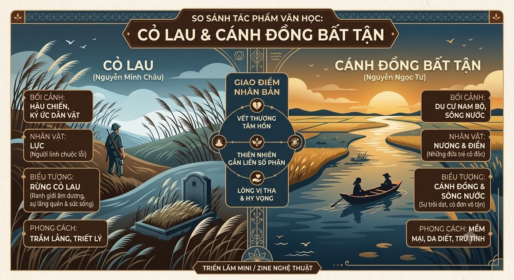
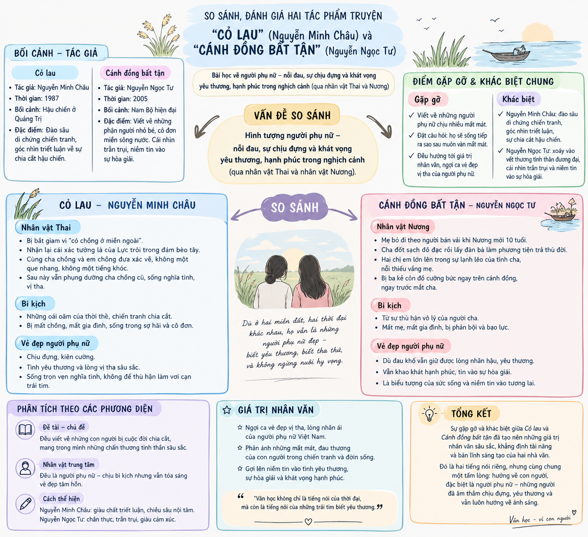

Hai câu chuyện, hai miền đất, cùng một nỗi niềm về con người.
Thành viên nhóm
1
Nhóm 1
6 thành viên
TNguyễn Thị Phương Thảo
ANguyễn Thị Mai Anh
TNguyễn Võ Ngọc Trâm
NNguyễn Hoàng Hiếu Nghĩa
TNguyễn Lê Ngọc Thương
TNguyễn Tấn Thành
2
Nhóm 2
6 thành viên
NHuỳnh Xuân Nghi
YNgô Kim Yến
TLa Trần Tuấn Tú
QNguyễn Bảo Quyên
NTừ Phan Gia Nhi
UTạ Mỹ Phương Uyên
Lý do chọn đề tài
Vì sao nên so sánh Cỏ lau và Cánh đồng bất tận?
Đặt Cỏ lau (Nguyễn Minh Châu) và Cánh đồng bất tận (Nguyễn Ngọc Tư) bên cạnh nhau không chỉ là cuộc gặp gỡ giữa hai tác phẩm xuất sắc, mà còn là hành trình đối thoại giữa hai thế hệ cầm bút tiêu biểu của văn học Việt Nam.
Sự kế thừa và bứt phá: Qua hình tượng người phụ nữ giữa bi kịch, việc so sánh giúp làm rõ cách văn học chuyển mình từ những vết thương hậu chiến đến những rạn nứt tình thân thời bình.
Sứ mệnh chữa lành: Dù khác biệt về thi pháp và thời đại, cả hai tác giả đều gặp nhau ở niềm tin vào lòng vị tha và khát vọng hạnh phúc — khẳng định sức sống vĩnh hằng của giá trị nhân văn trong văn chương.
Infographic về so sánh 2 tác phẩm

Cánh đồng bất tận
Nguyễn Ngọc Tư
Tác giả và bối cảnh ra đời
Nguyễn Minh Châu
Tác giả:Nguyễn Minh Châu (20 tháng 10 năm 1930 – 23 tháng 1 năm 1989), tên thật là Nguyễn Thí, là một nhà văn có ảnh hưởng quan trọng đối với văn học Việt Nam trong giai đoạn chiến tranh Việt Nam và thời kỳ đầu của Đổi mới. Ông là một trong những cây bút văn xuôi tiêu biểu của nền văn học Việt Nam 1954–1975.
Bối cảnh ra đời: Xuất hiện sau chiến tranh gần 30 năm, tác phẩm của Nguyễn Ngọc Tư phản ánh thực tại xã hội trong thời kỳ hội nhập và biến đổi. Lúc này, bi kịch không còn đến từ bom đạn lịch sử, mà xuất phát từ những rạn nứt tình thân, sự cô đơn tận cùng và góc khuất bạo lực âm ỉ trong đời sống thường nhật của con người Nam Bộ.
Sự kiện chính
1
Bi kịch gia đình rạn nứt
Sau khi người mẹ bỏ theo người bán vải, Út Vũ đốt nhà, đưa hai con (Nương và Điền) lên ghe trôi dạt khắp các cánh đồng Nam Bộ và dùng tình cảm làm công cụ trả thù đời.
2
Những cuộc gặp gỡ và mất mát
Hai chị em cưu mang chị Sương – một phụ nữ bán dâm bị đánh ghen; nhưng sự ấm áp ngắn ngủi qua đi khi Sương rồi Điền lần lượt bỏ đi, để lại Nương cô độc bên người cha cạn kiệt tình thương.
3
Đỉnh điểm bi kịch và mầm sống tha thứ
Nương bị ba kẻ côn đồ cưỡng bức ngay trước mắt cha; thế nhưng từ trong tột cùng đau đớn, cô vẫn bao dung hướng về đứa trẻ tương lai bằng niềm tin vào lòng vị tha.
Tóm tắt tác phẩm
Cánh đồng bất tận là câu chuyện trôi dạt đầy cay đắng của hai chị em Nương và Điền cùng người cha tên Út Vũ trên chiếc ghe nuôi vịt, lang bạt khắp các miền sông nước Nam Bộ. Bi kịch bắt đầu từ khi mẹ Nương bỏ nhà theo một người bán vải dạo ngay trước mắt hai đứa trẻ. Đau đớn và hận thù, Út Vũ đốt sạch nhà cửa, mang hai con lên ghe sống đời du mục và dùng tình cảm làm phương tiện trả thù đời: ông quyến rũ những người đàn bà nhẹ dại, khiến họ yêu rồi tàn nhẫn bỏ rơi họ để trút bỏ uất hận.
Hai chị em Nương và Điền lớn lên trong sự thiếu vắng tình thương của mẹ và sự lạnh lẽo, cằn cỗi của cha. Một ngày nọ, hai đứa trẻ dũng cảm cứu chị Sương — một phụ nữ làm nghề bán dâm bị người trong làng đánh ghen và đổ keo dán sắt tàn nhẫn. Sự xuất hiện của Sương mang lại chút hơi ấm tình thân ngắn ngủi cho chiếc ghe nhỏ, nhưng rồi Sương lại tiếp tục trở thành nạn nhân của Út Vũ và phải bỏ đi; không lâu sau, Điền vì xót xa cho Sương cũng quyết định rời bỏ cha và chị.
Giá trị nghệ thuật
Điểm nhìn trần thuật độc đáo: Kể qua đôi mắt của Nương — góc nhìn vừa ngây thơ, vừa trầy xước, miêu tả hiện thực một cách trần trụi mà sâu cay.
Đậm đà chất liệu Nam Bộ: Ngôn ngữ mộc mạc, sắc lẹm, mang đậm hơi thở sông nước miền Tây (ghe, phèn chua, cà ràng...).
Giọng điệu & Biểu tượng: Giọng văn "tưng tửng", bình thản trước thảm cảnh làm tăng độ nhói đau; hình ảnh "cánh đồng bất tận" trở thành biểu tượng cho kiếp người trôi dạt, cô độc.
Tư tưởng chính
Cảnh báo về những tổn thương tình thân, sự lạnh lẽo trong gia đình và vòng xoáy hận thù thời bình.
Tôn vinh sức sống phục sinh diệu kỳ, lòng bao dung vượt lên trên nỗi đau thân xác và tinh thần của người phụ nữ.
Thắp sáng niềm tin vào bản tính thiện lương, lấy sự tha thứ để khép lại bi kịch và mở ra tương lai cho thế hệ mai sau.
Đọc bản pdf của tác phẩmCánh đồng bất tận – Nguyễn Ngọc Tư
Tác giả: Nguyễn Minh Châu (20 tháng 10 năm 1930 – 23 tháng 1 năm 1989), tên thật là Nguyễn Thí, là một nhà văn có ảnh hưởng quan trọng đối với văn học Việt Nam trong giai đoạn chiến tranh Việt Nam và thời kỳ đầu của Đổi mới. Ông là một trong những cây bút văn xuôi tiêu biểu của nền văn học Việt Nam 1954–1975 và được xem là "người mở đường tinh anh" thời kỳ Đổi mới.
Bối cảnh ra đời: Ra đời vào tháng 11 năm 1987, thời điểm di chứng chiến tranh vẫn còn vô cùng nhức nhối. Tác phẩm đánh dấu bước ngoặt tư duy nghệ thuật của Nguyễn Minh Châu khi dịch chuyển từ cảm hứng sử thi ngợi ca sang cảm hứng thế sự – đời tư, dũng cảm soi chiếu vào những góc khuất rỉ máu hậu chiến và bi kịch cá nhân thời hậu chiến.
Sự kiện chính
1
Người lính trở về từ cõi chết
Năm 1983, Lực – người lính Quảng Trị – trở lại chiến trường xưa để tìm hài cốt đồng đội và bàng hoàng đối diện với tấm bia mộ mang chính tên mình.
2
Bi kịch nghịch cảnh hậu chiến
Lực cay đắng nhận ra người vợ cũ (Thai) vì tưởng anh đã hy sinh nên đã đi bước nữa để phụng dưỡng cha chồng; sự trở về của anh đẩy Thai vào sự giằng xé dữ dội giữa tình và nghĩa.
3
Sự hy sinh âm thầm
Hiểu được nỗi đau và sự hy sinh của người thân, Lực chủ động rút lui, lặng lẽ rời đi để giữ gìn mái ấm bình yên cho Thai.
Tóm tắt tác phẩm
Cỏ lau xoay quanh Lực — một sĩ quan quân đội trở lại chiến trường xưa ở Quảng Trị sau 24 năm để tìm kiếm hài cốt đồng đội. Tại đây, anh bàng hoàng đối diện với chính ngôi mộ mang tên mình và nhận ra trong tâm thức người thân, anh đã "chết" từ hai mươi tư năm trước. Bi kịch gia đình mở ra khi Lực gặp lại Thai — người vợ trẻ năm xưa anh vừa cưới được vài ngày thì lên đường ra trận. Vì tin Lực đã hy sinh (sau khi nhận một cái xác vô danh trôi trên sông), Thai ở lại phụng dưỡng cha chồng chu đáo.
Sau nhiều năm, cô đi bước nữa với Quảng và sinh thêm những người con, nhưng vẫn đem cả gia đình mới về sống chung để chăm sóc cha Lực và thờ phụng anh. Sự trở về bất ngờ của Lực khiến tất cả rơi vào giằng xé: Thai xót xa và dằn dằn giữa tình đầu và nghĩa hiện tại, Quảng mang tâm lý ê kề, còn Lực phải tự đối diện với những dằn xé của chính mình trong quá khứ. Nhận ra sự có mặt của mình chỉ làm xáo trộn mái ấm bình yên của Thai, Lực chọn cách chủ động rút lui, lặng lẽ rời đi để giữ lại sự êm ấm cho người thân.
Giá trị nghệ thuật
Thi pháp đổi mới & Tình huống triết luận: Xây dựng tình huống truyện kịch tính (người lính "từ cõi chết trở về" đối diện với chính ngôi mộ của mình), đan cài quá khứ và hiện tại theo phương thức đồng hiện.
Điểm nhìn & Giọng điệu: Truyện kể theo ngôi thứ nhất đầy tính tự vấn của Lực; giọng văn thâm trầm, trang trọng, kết hợp giữa tự sự và trữ tình triết lý.
Biểu tượng nghệ thuật giàu sức gợi: Chi tiết cỏ lau (loài cây hoang dại được "xương thịt người tưới bón"), hòn vọng phu, chậu nước rửa ảnh nâng bi kịch cá nhân lên tầm vóc chiêm nghiệm nhân sinh.
Tư tưởng chính
Dũng cảm soi chiếu vào những góc khuất rỉ máu và di chứng tinh thần thời hậu chiến.
Tôn vinh sự nhẫn nại, nghĩa tình và lòng vị tha của người phụ nữ Việt Nam trước bi kịch thời thế.
Gửi gắm thông điệp nhân văn về sự hy sinh, nhường nhịn và khả năng chữa lành tổn thương bằng tình thương yêu.
Điểm hẹn của những tấm lòng nhân hậu trước nỗi đau nhân thế
Nội dung so sánh
Số phận nhỏ bé và bi kịch của người phụ nữ
Cả Thai (Cỏ lau) và Nương (Cánh đồng bất tận) đều là những người phụ nữ gánh chịu bi kịch nghiệt ngã không do lỗi lầm của bản thân; họ chịu nhiều mất mát, đau khổ giữa những xô lệch của thời thế hay sự thù hận nhẫn tâm của hoàn cảnh gia đình.
Di chứng hậu chiến và bi kịch đời thường
Cả hai tác phẩm đều đưa ra lời cảnh báo đầy nhói đau về hiện thực: nếu Cỏ lau phơi bày những vết thương tinh thần và bạo lực thời chiến vẫn ngấm sâu vào nếp nghĩ thời bình, thì Cánh đồng bất tận lại cảnh báo những tổn thương tình thân không được chữa lành sẽ trở thành mầm mầm cho cái ác lan rộng.
Bản tính thiện lương và lòng vị tha diệu kỳ
Từ trong tột cùng đau khổ, cả hai nhân vật đều không để hoàn cảnh nhẫn tâm làm khô cạn tình yêu thương; vẻ đẹp tâm hồn của họ tỏa sáng qua sự nhẫn nại, lòng bao dung, vị nhân sinh (Thai phụng dưỡng cha chồng cũ, dặn con thắp hương cho hai ngôi mộ; Nương cứu chị Sương, chịu đòn cho cha và chọn tha thứ cho đứa trẻ tương lai) để hướng tới sự chữa lành và niềm tin vào bản tính thiện lương.
Lý do tương đồng
Sự tương đồng giữa hai tác phẩm trước hết xuất phát từ bước ngoặt của văn học Việt Nam sau năm 1975 — khi tư duy nghệ thuật chuyển từ cảm hứng sử thi ngợi ca sang cảm hứng thế sự – đời tư, đặt số phận cá nhân làm trung tâm. Cùng mang trái tim nhân đạo sâu sắc, cả Nguyễn Minh Châu và Nguyễn Ngọc Tư đều dành sự thấu hiểu xót xa cho người phụ nữ giữa nghịch cảnh, từ đó ngợi ca thiên tính vị tha và sức sống bền bỉ của họ.
Sự khác biệt
: Từ vạt nắng triết luận hậu chiến đến cơn bão tình thân sông nước
Cỏ lau (1987) và Cánh đồng bất tận (2005) cách nhau 18 năm.
3 điểm khác biệt chính
Bối cảnh lịch sử và bản chất bi kịch
Cánh đồng bất tận
Đặt trong bối cảnh đời sống đương đại với những rạn nứt tình thân, bi kịch của Nương nảy sinh từ sự cạn kiệt tình thương trong gia đình và vòng xoáy trả thù tàn nhẫn của người cha. Tuy nhiên, Nương chủ động vươn lên, khép lại đau thương bằng sự tha thứ và niềm tin vào mầm sống mới.
Cỏ lau
Đặt trong bối cảnh hậu chiến, bi kịch của Thai mang bản chất của vết thương lịch sử giáng xuống từ bên ngoài (mối tình bị chia cắt 24 năm, thành "hòn vọng phu" đời thường), khép lại trong sự chịu đựng và âm thầm hy sinh.
Đặc trưng thi pháp, kết cấu và hệ thống biểu tượng
Cánh đồng bất tận
Điểm nhìn từ Nương (đôi mắt ngây thơ nhưng trầy xước nét già dặn). Kết cấu 8 phần dồn nén biến cố, kết hợp yếu tố kỳ ảo (hai chị em giao cảm qua suy nghĩ, nghe hiểu tiếng vịt). Biểu tượng thiên nhiên phương Nam: cánh đồng hoang hoắt, bầy vịt đói nhếch nhác, bồ lúa lênh đênh.
Cỏ lau
Tình huống truyện mang tính triết luận kịch tính (người lính "đã chết" trở về, vái trước mộ mình). Ngôi kể thứ nhất (Lực), kết cấu 6 phần đan cài hiện tại - quá khứ theo phương thức đồng hiện. Biểu tượng giàu suy tưởng: cỏ lau, hòn vọng phu, chậu nước rửa ảnh.
Phong cách nghệ thuật, ngôn ngữ và giọng điệu
Cánh đồng bất tận
Nguyễn Ngọc Tư là nhà văn nữ thời bình, viết về nỗi đau qua câu chuyện đời thường sông nước. Giọng văn "tưng tửng", thản nhiên đến tê dại trước thảm cảnh; ngôn ngữ đậm chất Nam Bộ mộc mạc mà sắc lẹm (ghe, kinh, cà ràng, phèn chua, lúc nhúc, chặt tóc dục dặc).
Cỏ lau
Nguyễn Minh Châu là nhà văn quân đội kinh qua chiến tranh nên câu chuyện đậm đà chiều sâu triết luận và sự sám hối. Giọng văn trang trọng, trầm sương, đậm chất suy tưởng, hòa quyện tự sự và trữ tình.
Lý do dẫn đến sự khác biệt
Sự khác biệt sâu sắc này xuất phát từ khoảng cách thời đại, trải nghiệm sống và cá tính sáng tạo của hai nhà văn:
Nguyễn Minh Châu là người lính bước qua chiến tranh, mang độ lùi tâm lý hậu chiến nên tiếp cận con người ở chiều sâu triết luận lịch sử.
Nguyễn Ngọc Tư là nhà văn nữ sinh ra thời bình tại Cà Mau, gắn bó với sông nước miền Tây nên soi chiếu nỗi đau từ góc nhìn rạn nứt tình thân đương đại.
Bên cạnh đó, sự chuyển biến của tư duy nghệ thuật qua từng giai đoạn văn học cùng lựa chọn thi pháp cá nhân đã quy định những nét riêng biệt về ngôi kể, giọng điệu và biểu tượng của mỗi tác phẩm.
Sản phẩm của nhóm
Những sản phẩm sáng tạo đi kèm đề tài.
1Mô hình so sánh 2 tác phẩm
Sơ đồ đặt hai tác phẩm cạnh nhau, đối chiếu điểm tương đồng và khác biệt về bối cảnh, nhân vật và tư tưởng.
2Video AI
Đoạn video nhóm thực hiện bằng AI, tái hiện không khí hai câu chuyện từ miền Tây sông nước đến vùng đất hậu chiến.
3Infographic

Infographic tóm lược nhanh thông tin tác giả, diễn biến chính và những điểm gặp nhau, khác nhau của hai tác phẩm.